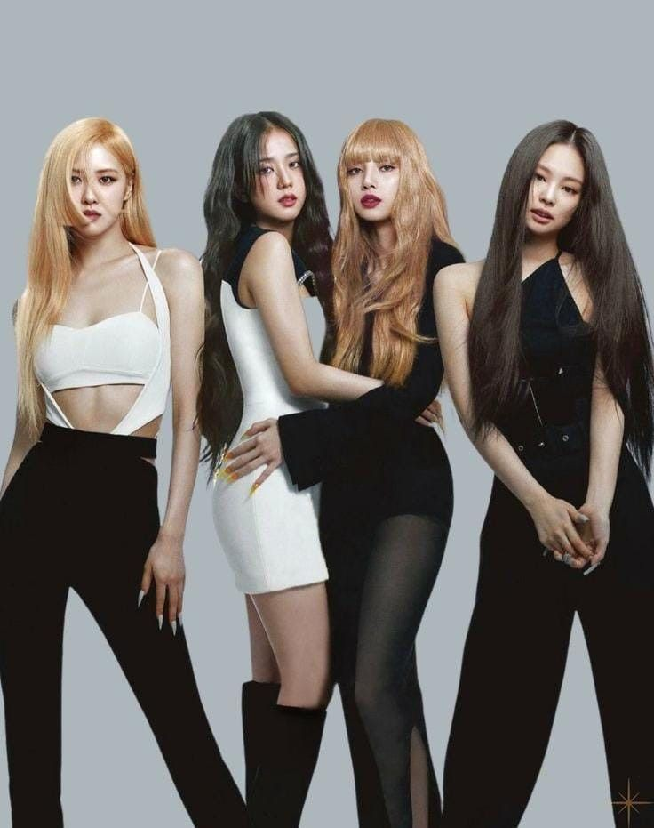

La influencia de Blackpink más allá de la música, especialmente en Corea del Sur, se extiende también a la moda. Cada miembro ha servido como embajadora global de diferentes marcas de lujo, entre las que destacan: Jisoo para Dior y Cartier, Jennie para Chanel, Rosé para Yves Saint Laurent y Tiffany & Co. y Lisa para Bulgari y Celine. Además, se destacó a Blackpink por llamar la atención internacional con el Hanbok tradicional de Corea del Sur que presentaron en su vídeo musical «How You Like That» y en algunas actuaciones en el escenario. La imagen de Blackpink siempre enfatiza en la moda y la individualidad. Jennie afirmó que la moda «definitivamente nos empodera tanto como la música» en una entrevista con la revista Elle, y Rosé describió su música y la moda como «inseparables». Su moda se ha destacado por combinar tanto en la uniformidad del grupo como los gustos y estilos individuales.
El grupo también ha apoyado y colaborado con otras marcas de alta gama, como las marcas de ropa deportiva Puma y Reebok, las casas de moda de lujo Louis Vuitton[ y Dior Cosmetics, la marca de cosméticos Moonshot, la marca de bolsos St. Scott London, y el edificio de tiendas por departamento 109 (Shibuya). Blackpink también lanzó mercadería en colaboración con Tokyo Girls Collection para Cecil McBee en Japón.
El 3 de noviembre de 2020, el Grupo Buggati, empresa norteamericana con presencia global de diseño y venta de bolsos y maletas, anunció la firma de una licencia con dos marcas de música, The Rolling Stones y Blackpink, para la creación y distribución de una colección de bolsos, maletas y accesorios.
En enero de 2021, la revista de moda Elle en su edición norteamericana informó que, tras la portada del grupo realizada en octubre de 2020, esta se convirtió en la publicación con más me gusta en los 75 años de historia de la revista, con más de 353.000 clicks.
El 8 de julio de 2021, se hizo pública la colaboración de Blackpink con la cadena internacional de ropa H&M, para el lanzamiento de una colección completa de merchandising en gran parte de todos los continentes donde la tienda tiene presencia, que incluye poleras, polerones, vestidos, faldas y accesorios.
A finales de 2021, la revista Vogue en su edición británica se refirió a "La dominación mundial de la moda de Blackpink" durante el 2021, donde destacó el acto de apertura que realizó Jisoo en el evento de Dior en el Estadio Panathinaikó de Grecia; la presencia de Jennie en el Desfile Primavera/Verano 2022 de Chanel; la asistencia de Rosé a la Met Gala como rostro de Yves Saint Laurent y musa del diseñador Anthony Vaccarello; y las diversas campañas de Lisa para Celine durante el año.